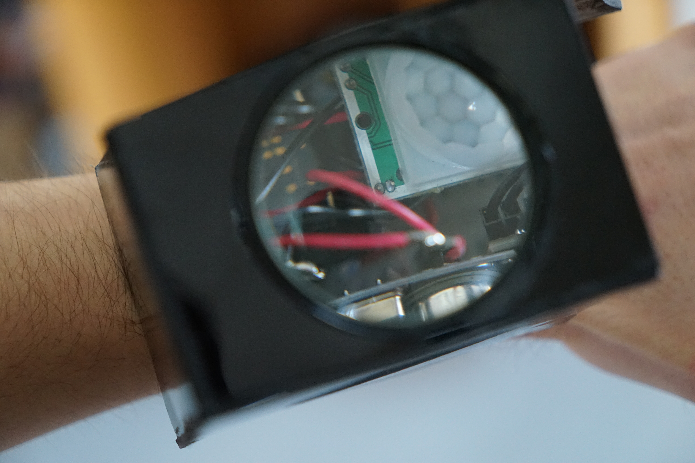

LUCA
ZELL
> LOADING PROFILE..._
2022
glockundzell
2023
SOUTH AFRICA
2024
REALITY CHECK
P R A G M A T I S M U S
> MODULE: WIRED_&&_WEIRD
> LOADING SENSORS..._
WIRED && WEIRD
ZEIT IM RAUM
NOISE DETECTED

ESP32_WATCHDOG.cpp
void sendOSCData(bool motion, long dist) {
OSCMessage msg("/data");
msg.add((int32_t)1024); // HC-SR04
msg.add(72); // Pulse
Udp.beginPacket(oscAddress);
}
ERROR 500
PURPOSE NOT FOUND

DEBUGGING REALITY
STATUS: READY
> INITIALIZING SYSTEM...
> LOADING MODULES... OK
> VERIFYING INTEGRITY... OK
> COMPILING EXPERIENCE... DONE
_
NEXT:
100% INTERFACE
Luca Zell // Kolloquium 2026